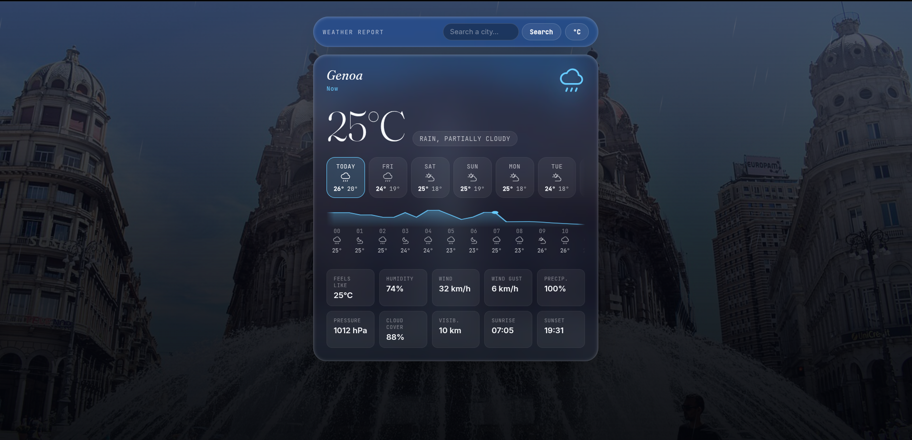

Weather Report
An hour-by-hour curve, an eight-day outlook, and a sky that matches.
Search a city for its temperature curve and forecast, over a live photo of the place pulled from Wikipedia and a sky that animates to match the weather — drawn in CSS, not video.

Screens
A sky made of CSS
Rain, cloud and clear sky are CSS, not a video file. It costs a fraction of the bandwidth, it scales to any viewport, and it can be driven straight from the forecast data.
Two sources, one screen
The forecast comes from a weather API and the photograph from Wikipedia, which means every city has to survive the case where one of the two has nothing to give.